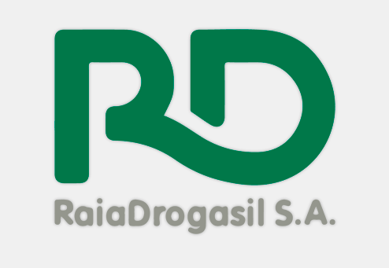
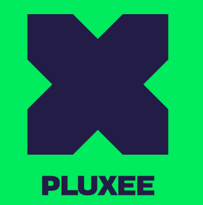

Não adaptamos sua empresa ao software.
Criamos o software para a sua empresa.
Mapeamos seus processos e construímos o sistema do jeito que a sua operação funciona — até 60% mais barato do que assinar mais um SaaS que sua equipe usa 5%.
- Diagnóstico gratuito de 30 minutos, sem compromisso
- Primeiros resultados em 2 a 4 semanas
- Payback médio em menos de 6 meses
Experiência construída em


Agende seu diagnóstico gratuito
30 minutos, sem compromisso. Retornamos em até 1 hora útil.
Seus dados são protegidos. Sem spam, jamais.
Sua operação travou.
O problema tem nome.
39% das PMEs não utilizam os programas nos quais investiram. Não é falta de esforço da equipe — é falta de aderência da ferramenta ao processo.
Ferramenta cara que não encaixa
Jira, Salesforce, SAP, TOTVS, Monday, HubSpot… você paga caro por uma plataforma genérica e ainda precisa adaptar a empresa ao software — quando deveria ser o contrário.
Operação presa em planilhas
Versões conflitantes, retrabalho invisível e processos que só funcionam porque estão na memória de uma pessoa-chave. Quando ela sai de férias, a operação para.
Contratos anuais e licenças sem uso
Treinamentos exaustivos, suporte que não entende o seu negócio e funcionalidades que ninguém abre — enquanto a mensalidade enterprise chega todo mês.
A culpa não é da sua equipe. A ferramenta não foi desenhada para o seu processo.
44% das licenças de SaaS globalmente ficam sem uso — custando às empresas médias mais de R$ 60 mil por ano em desperdício. (Zylo SaaS Management Index, 2024)
Não é consultoria tradicional. Não é SaaS genérico.
É a sua operação virando sistema.
Anos de experiência em Agilidade e Processos nos permitem mapear a cadeia de valor da sua empresa de ponta a ponta — antes de escrever uma linha de código.
Diagnóstico
Mapeamos seu processo atual, identificamos gargalos reais e mostramos onde o valor é criado — e onde é desperdiçado.
30 minutos · gratuitoConstrução
Desenhamos o fluxo ideal e desenvolvemos a solução sob medida para a sua operação — 100% alinhada ao processo real.
2 a 4 semanasEvolução
Você começa a usar em semanas e nós evoluímos o sistema junto com o crescimento do seu negócio.
Melhoria contínuaConsultoria de Processos
Mapeamos sua cadeia de valor completa — onde o valor é criado, onde é desperdiçado e como cada processo se integra ao negócio. Sem esse mapa, qualquer software é só mais uma ferramenta genérica.
Design de Fluxo
Desenhamos como informações, decisões e pessoas fluem pela sua operação — de forma visível, auditável e eficiente. O fluxo certo transforma a entrega de valor.
Sistema Integrado
Só então construímos ou configuramos a tecnologia — 100% alinhada ao seu processo real. Não é software que você adapta. É a sua operação que vira sistema.
Por que a Célere?
O momento racional da decisão: compare os três caminhos.
| Característica | Consultoria Tradicional | SaaS de Prateleira | CélereRecomendado |
|---|---|---|---|
| Adaptação | ✕ Você se adapta ao método deles | ✕ Você se adapta ao software | ✓ O software se adapta a você |
| Velocidade | ✕ Meses de reuniões e PDFs | ✕ Imediato (mas incompleto) | ✓ Resultados em semanas |
| Custo | ✕ Altíssimo investimento inicial | ✕ Mensalidade eterna por usuário | ✓ Payback em menos de 6 meses |
| Foco | ✕ Teoria e slides | ✕ Funcionalidades genéricas | ✓ Sua operação funcionando |
A transformação na prática
Problemas reais. Soluções sob medida. Resultados mensuráveis.
Sistema de Pedidos Próprio
Dependência total do iFood, com comissões que consumiam a margem e zero visibilidade sobre os pedidos em tempo real.
sem pagar comissão
Dashboard de Métricas em Tempo Real
4 dias para fechar um relatório gerencial, com 15% de erro manual em cada fechamento de período.
relatório, erro zero
Sistema de Hunting e Onboarding
Recrutamento e onboarding espalhados no Excel e WhatsApp — sem rastreabilidade e com perda de candidatos no meio do processo.
pipeline rastreável
Quem está por trás da Célere
Processos e tecnologia com quem já viveu operação de verdade.

Grandes empresas funcionam porque têm processo. Pequenas empresas crescem quando descobrem isso.
Diego Caporusso — Founder & CEO

Diego Caporusso
Founder & CEO
Mais de 10 anos estruturando operações nas maiores empresas do varejo brasileiro — Raia Drogasil, Lojas Renner, Sodexo e Dafiti. Especialista em transformar processos caóticos em sistemas que a equipe realmente usa e que escalam com o crescimento.
Perguntas Frequentes
Comece com um diagnóstico
gratuito de 30 minutos.
Sem compromisso. Preencha o formulário e entraremos em contato em até 1 hora útil.
Seus dados são protegidos. Sem spam, jamais.